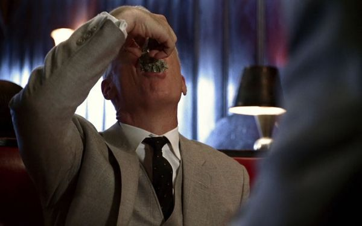
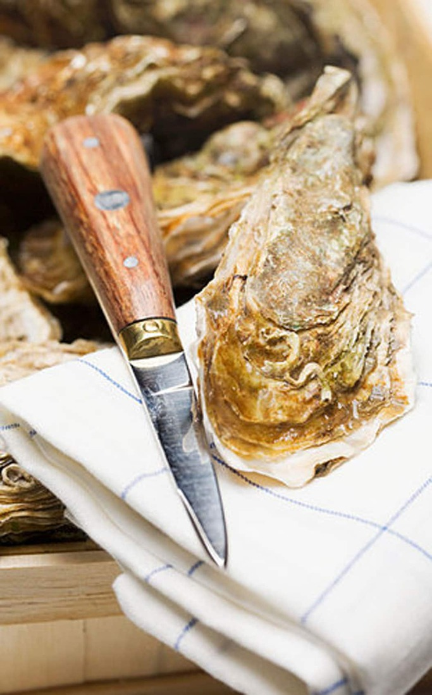
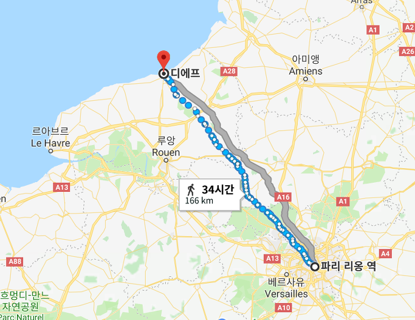
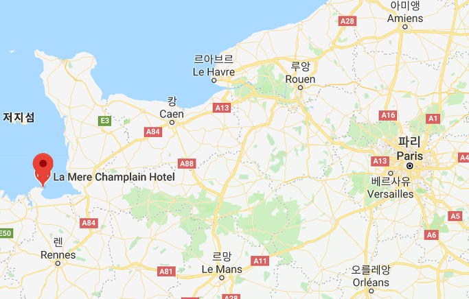
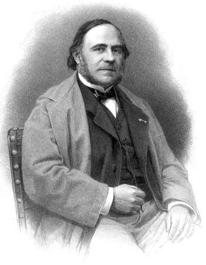
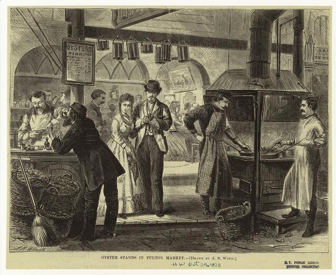

빅토르 위고의 실수 ? - 6월에 먹는 굴 이야기
게시: 2017-12-27T12:20:33+09:00
(코렝트 주점 앞에 바리케이드를 친 앙졸라와 그의 친구들)
레미제라블, 빅토르 위고 작, 배경 1832년 파리 --------------------
6월 5일 아침, 항상 같이 지내는 친구들인 레글과 졸리는 코렝트(Corinthe) 주점으로 아침식사를 하러 갔다. 졸리는 지독한 코감기가 걸려 코가 막힌 상태였는데, 레글에게 막 옮기 시작한 상태였다. 레글은 닳아 헤진 옷을 입고 있었지만 졸리는 잘 차려 입고 있었다.
그들이 코렝트 주점의 문을 밀고 들어간 것은 대략 오전 9시 경이었다. 그들은 2층으로 올라갔다.
마틀로트와 지블로트가 그들을 맞이했다.
"굴, 치즈와 햄 (Huîtres, fromage et jambon)." 레글이 말했다. 그리고 그들은 자리에 앉았다.
주점은 비어 있었다. 그들 둘 밖에는 아무도 없었다.
졸리와 레글을 잘 알고 있던 지블로트는 식탁 위에 와인 한 병을 갖다 놓았다.
그들이 처음 나온 굴을 먹고 있을 때, 계단으로 올라오는 바닥의 햇치문에서 머리가 하나 나타나면서 목소리가 들려왔다.
"지나가다 거리에서 냄새를 맡았지, 브리 치즈의 맛있는 냄새말이야. 들어가겠네."
그랑테르였다. 그랑테르는 등받이 없는 의자를 집어들고는 자리에 앉았다.
--------------------
저는 문학 작품에서 감동보다는 먹을 것 관련 이야기를 즐겨 찾는 편입니다. 레미제라블에서도 위에 인용한 부분을 읽고 무척 인상이 깊었습니다. 이 짧은 인용 구절에서 여러가지 궁금한 점이 나왔거든요.

1) 생굴인가 요리한 굴인가 ?
저 구절을 읽을 때 가장 궁금했던 것은 저 굴이 생굴이었을까, 아니면 뭔가 튀기거나 삶는 등 요리한 것이었을까 하는 점이었습니다. 특히 당시엔 냉장고도 고속버스도 없던 시절이었으니까 굴의 보존을 위해서라도 훈제 굴을 만들어 놓았던 것 아닐까 하는 생각도 했더랬습니다. 실제로 훈제 굴이라는 음식이 있기는 합니다.
하지만 결국 저는 저 굴이 생굴이라고 나름 결론을 내렸습니다. 지금도 그렇습니다만, 당시에도 굴은 생으로 먹는 것이 가장 보편적이었기 때문입니다. 인용 구절에서처럼 레글이 그냥 '굴'이라고만 이야기했으므로, 저 굴은 익힌 것이 아니라 생굴이라고 보는 것이 맞을 듯 합니다. 유럽인들은 원래 해산물을 날로 먹는 것에 대해서 굉장히 거부감을 느끼지만 굴만은 예외입니다. 참 의이한 일이지요. 심지어는 생선 외에의 해산물을 거의 먹지 않는다는 러시아인들조차도 굴은 날 것으로 먹습니다. 체호프(Chekhov)의 소설 '굴'에서는 19세기 후반, 모스크바 길거리의 어느 불쌍한 구걸 소년이 굴이 뭔가 집게 달린 갑각류라고 생각하면서도 배가 너무 고픈 나머지 굴이라도 먹겠다고 하자, 신사들이 '꼬마가 생굴을 먹는다고 ? 그거 참 재미있겠네'라며 꼬마에게 굴을 주는 장면이 나옵니다. 이 짧은 소설은 제가 (요즘 휴가인지라) 번역해서 올려 볼게요.
전에 맨체스터 유나이티드와 그 감독인 퍼거슨 경 관련 기사를 읽은 적이 있는데, 퍼거슨 경의 엄격한 식단 관리 중 하나로 경기 전에는 절대 조개 종류를 못 먹게 한다는 것이 있었습니다. 조개 종류는 쉽게 상해서 식중독을 일으킬 가능성이 높으니까 그렇다고 하더군요. 퍼거슨 경의 방침은 결코 무시할 사항이 아닙니다. 그런데 어떻게 익히지도 않은 생굴을 안심하고 먹을 수 있을까요 ?
비결은 간단합니다. 반드시 살아 있는 굴을 먹으면 됩니다. 그러자면 먹을 때 반드시 아직 살아 있는 굴의 껍질을 자기 눈 앞에서 까서 즉석에서 먹어야 하고요. 아마 레글과 졸리가 주문한 굴도 껍질 째로 나왔을 것입니다.
제가 '그들이 처음 나온 굴을 먹고 있을 때' 라고 (구글 번역기의 도움을 받아) 번역한 원문 구절은 'Comme ils étaient aux premières huîtres' 입니다. 이걸 영어로 번역하자면 'as they were at the first oysters' 입니다. 저는 저 aux (à + les = aux), 영어로 at을 '먹고 있을 때'라고 번역했습니다만, 어떻게 보면 '굴 껍질을 까느라 애를 쓰고 있을 때'라고 봐도 크게 흠은 없을 듯 합니다. 즉, 껍질 속에 살아있는 생굴을 까먹느라 시간이 좀 걸렸다는 것이지요.
그렇게 굴을 까먹기 위해서는 그냥 일반적인 칼을 써도 되지만 끝이 가늘고 짧은 굴까기 전용 칼을 쓰는 것이 좋다고 합니다. 굴 껍질의 뾰족한 쪽이 경첩이인데, 그 곳을 잘 더듬어 보면 좁은 홈 같은 것이 있으니 거기로 칼 끝을 밀어넣고 껍질의 아래 위를 연결하는 관자 힘줄을 끊고 칼을 비틀어 껍질을 열라는 것이지요. 그러고 난 다음이 아주 중요한데, 굴 껍질에 아주 가볍게 입을 대고 굴을 먹어야 하는데, 굴 껍질 안에 있는 액체도 놓치지 말고 다 마셔야 한다는 것입니다. 그런 굴의 체액은 그냥 바닷물만이 아니라 굴의 피라고 할 수도 있는 것인데, 그것도 마셔야 제대로 굴을 먹는 것이라고 합니다.

모파상의 단편 소설 '쥴 아저씨' (Mon oncle Jules)에 그런 부분이 아주 잘 묘사되어 있습니다.
"문득 아버지는 우아하게 차려 입은 두 숙녀에게 두 신사가 굴을 권하는 장면을 보았다. 누더기를 걸친 늙은 선원 하나가 칼로 굴을 따서 신사들에게 건네주면, 그 신사들이 다시 숙녀들에게 그걸 건넸다. 그 숙녀들은 고운 손수건으로 굴껍데기를 잡고 국물이 옷을 더럽히지 않도록 입술을 약간 삐죽 내밀어 굴을 아주 우아하게 먹었다. 그리고는 재빠르고 작은 동작으로 국물을 마시고는 껍질을 뱃전 밖으로 던졌다."
문제는 저 '쥴 아저씨' 속의 굴은 항구의 배 위에서 직접 까먹는 것이지만, 레 미제라블 속의 굴은 한참 내륙인 파리 시내에서 까먹는 것이라는 점입니다. 대체 냉장고도 없던 시절에 어떻게 파리까지 생굴을 날랐을까요 ?

2) 어촌에서 파리까지 생굴 운송이 가능했나 ?
레미제라블 시대는 아직 철도가 프랑스 전역에 상용화되지 않은 시절이었습니다. 따라서 파리에서 가장 가까운 해변 어촌이라고 할 수 있는 디에프(Dieppe)까지의 거리인 170km를 마차로 이동해야 했습니다. 당시 마차가 사람이 걷는 것보다 빠르다고 해도, 기껏해야 짐마차인데 사람보다 2배 이상 빨랐을 것 같지는 않습니다. 즉, 시속 8km 정도가 한계였을텐데, 쉬지 않고 달려도 26시간, 하루에 8시간씩 달린다고 해도 3일 이상 가야 하는 거리였습니다. 게다가 어선에서 굴을 하역하고 분류해서 마차에 싣는 것에도 시간이 걸릴 것이고, 또 파리 시장에서 하역하고 판매해서 식당에 가는 데에도 시간이 걸리니, 아무리 빨리 먹는다고 해도 레글과 조이가 먹었던 굴은 바닷물에서 건져진 지 최소 5일, 아마 7일은 지난 것이었을 것입니다. 얼음도 없던 시절, 이게 가능한 일이었을까요 ?
가능했습니다 ! 구글링을 해보니 대합이나 홍합은 빨리 죽어 쉽게 상해버리지만 의외로 굴은 물 밖에 나온 뒤에도 꽤 오래, 심지어 시원한 곳에서 습기만 잘 유지해주면 2~3주 동안이라도 죽지 않는다고 합니다. 물론 껍질은 안 깐 상태에서의 이야기이지요. 현대 미국에서도 굴은 기차 등으로 장거리 수송할 때 얼음을 쓰지 않고 그냥 물에 적신 신문지로 덮어서 층층이 상자에 넣어 수송한다고 합니다. 얼음을 쓸 경우 수돗물을 얼려 만든 얼음이 녹으면서 흘러 들어가는 물 속의 염소 때문에 굴이 죽는다는 거에요. 아직 비행기나 고속 열차 등이 발명되기 훨씬 전인 19세기 후반에도 이런 식으로 해서 미국 동부 해안 체셔피크 만에서 잡은 굴을 증기 기관차를 통해 미국 중서부 콜로라도 주의 덴버까지도 운반했다고 하네요.
실제로 19세기 후반에 포르투갈로부터 영국으로 선박을 통해 살아있는 생굴을 대량으로 수출하기도 했습니다. 그런 화물선이 증기선이었을지 범선이었을지 불확실한데, 포르투갈 북쪽의 대표적 항구인 오포르토(Oporto)로부터 런던까지의 약 1600km 항로를 시속 16km의 증기선이라고 해도 4일, 평균 시속 9km의 속도를 내는 범선일 경우 거의 7일의 시간이 걸렸습니다. 항구에서의 통관 절차 및 상하역, 판매를 위한 대기 시간 등을 고려하면 적어도 2주간은 굴이 살아있어야 그런 무역이 이루어졌겠지요. 그런 생굴 무역이 의외의 결과를 낳기도 했습니다. 1868년, 포르투갈산 생굴 60만개를 싣고 영국으로 가던 화물선 르 모를레지엥(Le Morlaisien) 호가 프랑스 지롱드(Gironde) 강 하구에서 폭풍을 만나 대피하고 있었습니다. 폭풍 때문에 발이 묶인 화물선에서는 며칠이 지나자 일부 굴이 죽어 썩기 시작했지요. 화물에서 악취가 나기 시작하자 남은 굴이라도 건져야겠다고 생각한 선장은 프랑스 보르도(Bordeaux) 지방 당국의 허가를 받고 죽은 굴 상자를 바다에 던졌습니다. 그러나 그 중 일부는 살아 있었습니다. 몇 년이 지나자, 기존의 프랑스산 토종 굴 대신 더 생명력이 좋았던 이 포르투갈산 굴이 해안에 크게 번성했는데, 처음에는 프랑스 어부들이 외래종이라고 이를 매우 싫어했답니다. 그러나 먹어보니 이 포르투갈산 굴이 맛도 좋고 번식력도 좋아서, 1910년대까지 프랑스 굴 산업을 이끄는 주종이 되었다고 합니다.
결론적으로 위고가 레미제라블에서 묘사한 것처럼 레글과 졸리는 마차로 디에프에서 파리까지 1주일 걸려 운송한 굴을 별 거리낌 없이 신선하게 먹을 수 있었을 것 같습니다.
3) 19세기 전반 당시 굴의 가격은 ?
레미제라블의 주인공 마리우스는 가난하여 아침은 자기 방에서 빵과 날달걀 1개로 때웁니다. 저녁에 식사할 때도 와인 대신 물을 마시지요. 그 친구인 졸리와 레글은 시골에서 보내주는 생활비로 넉넉하게 사는 편입니다. 가난한 친구들이라면 아침을 멀쩡한 자기 집 놔두고 저런 주점에 가서 먹지는 않겠지요. 그렇다고 아침부터 굴을 먹다니요 ! 굴 양식이 대량으로 이루어지는 지금도 굴은 비교적 비싼 음식입니다. 특히 생굴은 더욱 그렇습니다. 우리나라는 오히려 굴이 상대적으로 싼 음식이라고 하고, 유럽에서는 생굴은 매우 비싼 음식이라고 하지요. 레미제라블 시대인 19세기 전반은 과연 어땠을까요 ?
결론적으로 말하자면 전반적으로 비쌌습니다만, 저 1832년 당시에는 조금 쌌을 수도 있습니다. 육지에서 농사를 짓고 목축을 해서 키울 수 있는 곡물과 육류와는 달리, 바다에서 잡아들이는 어패류는 잡는 사람이 임자였으므로 아무런 절제 없이 모든 이들이 마구 남획을 했습니다. 가령 어떤 기록에 보면 대구라는 물고기는 먹성이 좋아서 한마리의 뱃속에서 고등어와 가자미가 너댓 마리, 게와 조개가 수십 개 발견되었다는 이야기를 읽은 적이 있습니다. 그게 상상이 가십니까 ? 대구가 비록 큰 물고기이긴 하지만 그렇게 크진 않은데 말입니다. 그런데 예전에는 그렇게 컸다고 합니다. 인간이 바다에서 원양 어업을 하기 전까지는 말이지요. 네덜란드 사람들이 북미 뉴펀들랜드 등에서 대구 어장을 발견한 이래 엄청난 남획이 이루어지면서 대구가 완전히 다 자라는 경우가 드물기 때문에 요즘 대구가 작아졌을 뿐, 원래는 2m까지도 자라난다고 합니다. 우리나라도 참조기를 너무 많이 잡아서 지금은 어장이 사실상 황폐화되어 버렸지만, 과거 전라도 해안 지방에는 번식기가 되면 참조기들이 바다 속에서 우는 소리에 잠을 설칠 정도로 고기가 많았다고 하는 기사를 읽은 적이 있습니다.
굴도 딱 그랬습니다. 굴은 일라이드(Illiad)에서 파트로클루스가 언급할 정도로 고대 그리스 시절부터 사람이 즐겨 먹던 조개류입니다. 게다가 한번 바위 등에 달라 붙으면 전혀 이동하지 않고 평생을 거기서 지내는 생물이지요. 그러다보니 남획되기 딱 좋았고, 실제로 씨가 마를 정도로 남획되었습니다. 그런 남획에 일조를 한 것이 프랑스 부르봉 왕가였습니다. 이들은 굴을 아주 좋아해서 많이 먹었고, 특히 지금도 질이 좋기로 유명한 컹칼(Cancale) 지방의 굴을 즐겨 찾았습니다. 그러나 덕분에 18세기 초 프랑스부터는 굴을 구경하기가 어렵게 되었고, 급기야 1760년대에는 심지어 베르사이유에서조차 캉칼 굴을 구하기가 어렵게 되어 귀족들도 남획의 폐해를 절감하게 되었습니다. 당연히 부족해지면 비싸집니다. 굴 가격은 엄청나게 뛰었을 것입니다.

(지도 왼쪽에 붉은 표식이 있는 지점이 컹칼입니다. 파리에서 꽤 머네요.)
그 결과, 여태까지는 아무런 법규가 없던 굴 채집에 규제가 생기기 시작했습니다. 1759년, 굴이 알을 낳는 시기인 여름철을 낀 6개월, 즉 4월 말부터 10월 말까지는 굴의 채집을 금지한 것입니다. 이것이 이어져서 오늘날에도 통용되는 R-달, 즉 영어 이름에 R이 들어가지 않는 달에는 굴을 먹으면 안 된다는 규칙이 만들어진 것입니다. (뒤에서 더 이야기하겠습니다만) 굴은 배란기에 독성을 띠므로 굴을 먹지 않는 것이 좋긴 한데, 그보다는 '이런 식으로 잡아 먹으면 굴 씨가 마르겠다'라는 절박함이 저렇게 '굴을 먹으면 안되는 달'을 만들게 된 것입니다.
이 글을 쓰면서 굴 관련 기사들을 찾다보니 나폴레옹이 굴을 좋아했다는 이야기도 나옵니다. 전투에 임하기 전에 항상 생굴을 후루룩 까먹었다는 것이지요. 그러나 이건 잘못된 이야기 같습니다. 나폴레옹의 식습관을 묘사한 비서들, 즉 부리엔이나 콩스탕의 회고록에 나폴레옹이 굴을 좋아했다는 이야기는 전혀 없습니다. 게다가 나폴레옹 전술 특성상 기동전을 펼치다보니 전투 직전에는 항상 식량 부족에 시달려서 나폴레옹 본인도 감자 한 알도 제대로 못 먹고 전투에 임하는 일이 많았는데 내륙인 아우스테를리츠나 예나 등지에서 생굴을 까먹었다 ? 이건 말이 안 되는 이야기입니다.
아마도 나폴레옹이 굴을 좋아했다는 이야기는 나폴레옹 본인이 아니라 그 조카인 나폴레옹 3세 때문에 비롯된 이야기 같습니다. 나폴레옹 3세는 유별나게 굴을 좋아했다고 하며, 심지어 보불 전쟁에 패해 폐위되어 영국으로 망명한 뒤에도 굴을, 그것도 가급적 프랑스산 굴을 즐겨 먹었다고 합니다. 그는 그저 먹기만 했던 것은 아닙니다. 나폴레옹 1세와 3세는 둘 다 프랑스 굴 산업에 직간접적으로 기여한 바가 큽니다. 삼촌인 나폴레옹 1세가 잦은 전쟁과 과도한 징집으로 어촌에 남자 씨를 말려버린 결과 굴을 채집할 사람이 부족해졌고, 덕분에 나폴레옹 전쟁 기간 중에는 프랑스 해안에 굴이 어느 정도 부활하게 된 것입니다. 그래서 레미제라블의 레글과 졸리도 아침부터 굴을 주문할 수 있게 된 것이지요. 그러나 1830년대 들어 다시 남획이 시작되면서 굴의 씨가 또 마르게 되었습니다. 나폴레옹 3세는 자신이 좋아하는 굴을 좀더 싸게 많이 먹기 위해 당시 유명한 생물학 교수였던 코스트(Jean Jacques Marie Cyprien Victor Coste)를 불러 굴 양식 방안을 모색하게 했고, 그 연구비를 지원했습니다. 그 결과 코스트는 현대적 굴 양식의 아버지로 우뚝 서게 되었으니, 나폴레옹 3세도 프랑스 역사에 긍정적으로 남긴 것이 오페라 가르니에 외에도 또 있긴 한 셈입니다.

(근대 굴 양식의 아버지 빅토르 코스트입니다.)
한편, 대서양 건너 미국에서는 상대적으로 굴 열풍이 늦게 부는 바람에, 19세기 후반 아주 저렴한 가격으로 굴을 많이들 먹었다고 합니다. 1842년 미국 뉴욕을 방문한 영국의 문호 찰스 디킨즈는 거리 곳곳에 가장 흔한 길거리 음식으로 생굴을 파는 것에 깊은 인상을 받았습니다. 그의 기록에 따르면 대략 12가구 당 하나 꼴로 굴 가판대가 거리를 가득 메우고 있어서, 뉴욕 시민들은 정말 가난한 사람이 아니라면 자주 거리로 나가 생굴을 까먹었습니다. 특히 한밤중에 출출한 사람들이 즐겨찾는 야식으로 인기가 있었다고 하네요. 한밤 중에 차가운 굴이라 ! 저도 굴은 좋아합니다만 그다지 어울리지 않는다고 생각합니다.

(내륙인 시카고의 풀턴 시장에도 굴 가판대가 성행했답니다.)
4) 분명히 6월인데 굴을 먹을 수 있나 ?
자, 가장 어려운 문제입니다. 레미제라블의 배경이 되는 1832년 6월 봉기는 분명 6월 5일에 시작되었고, 소설 본문에도 레글과 졸리가 굴을 주문한 날이 6월 5일이라고 적혀 있습니다. 분명히 6월은 R이 안 들어가는 달입니다. (우연인지 필연인지 프랑스어로도 R이 안 들어가는 달은 영어와 정확하게 일치합니다.) 그런데 어떻게 6월에 생굴을 먹을 수 있었을까요 ? 빅토르 위고가 글을 쓰다보니 실수한 것일까요 ?
불어 영어
janvier January
février February
mars March
avril April
mai May
juin June
juillet July
août August
septembre September
octobre October
novembre November
décembre December
결론부터 이야기하면 빅토르 위고가 실수한 것 같지는 않습니다. 산란기에는 굴에 독성이 생기므로 R이 안 들어가는 이름의 달에는 굴을 먹지 않는 것이 좋다는 말은 사실 근거가 모호한 말이라고 합니다. 단지 산란기에 굴은 살이 빠지고 마르므로 먹기에 좋지 않은 것이 사실이라고 합니다. 그리고 그런 여름철에는 바닷물의 수온이 올라 적조가 발생할 가능성이 더 높고, 그 때문에 그 물 속에서 사는 굴에도 사람에게 병을 일으킬 수 있는 병균이 붙어있을 가능성이 더 높은 것도 사실이고요. 또 무엇보다 생굴을 먹어야 하는데 아무래도 여름철에는 세균 번식이 더 왕성하게 잘 되겠지요. 그러나 무엇보다 저 'R이 없는 달에는 굴을 먹으면 안 된다'라는 전설은 굴의 독 보다는 굴의 생육과 번식을 보호하려는 법령에서 비롯된 바가 더 크다고 합니다. 가령 위에서도 언급했듯이, (각 지방마다 다릅니다만) 원래 금지령은 4월 말부터 10월 말까지였습니다. 9월이나 10월에는 R이 들어가는데도 먹지 말라는 것이었지요. 그러나 누군가 머리 좋은 공무원이 '그냥 R이 안 들어간 달에 먹지 말라고 하는 것이 사람들 기억에 오래 남겠다'라고 생각하고 그렇게 홍보를 한 모양입니다.
특히 저 소설의 배경이 되는 1832년에는 굴 보호를 위해 4월 말부터 10월 말까지 굴을 잡지 말라는 규제의 감독과 집행이 느슨해진 시기였습니다. 그래서 레글과 졸리가 비교적 싼 가격에 굴을 먹었나 봅니다. 결과적으로 빅토르 위고의 위대함에 무릎을 탁 치게 됩니다.
Source : 레미제라블, 빅토르 위고 작
쥴 아저씨, 모파상 작
http://www.telegraph.co.uk/food-and-drink/features/why-we-need-to-celebrate-british-native-oysters/
https://www.pinterest.co.kr/pin/106045766202394053/
https://www.theguardian.com/lifeandstyle/2011/sep/07/guide-to-eating-oysters
https://www.chowhound.com/post/raw-oysters-long-die-504718
https://ephemeralnewyork.wordpress.com/2017/01/05/everyone-in-19th-century-new-york-loved-oysters/
http://www.oysters.us/history1-usa.html
http://blog.michaelscateringsb.com/cooking_on_the_american_r/2009/12/charles-dickens-on-oysters.html
https://www.thekitchn.com/myth-busting-what-time-of-year-is-it-safe-to-eat-oysters-223123